環保2.0漫步雲端的咖啡羊毛鞋
連續兩年德國紅點設計大獎，
獨家專利技術的XpreSole®咖啡鞋，
這次換上美麗諾羊毛，保暖輕盈冬日開賣！
Feature
採用澳洲進口 頂級美麗諾羊毛
鞋面：鞋面外層：羊毛面料、純天然澳洲進口美麗諾羊毛。可降解；天然疏水性、透氣、輕量。
領口內裡：羊毛面料，純天然澳洲進口美麗諾羊毛，高親膚性，吸汗、極度舒適。
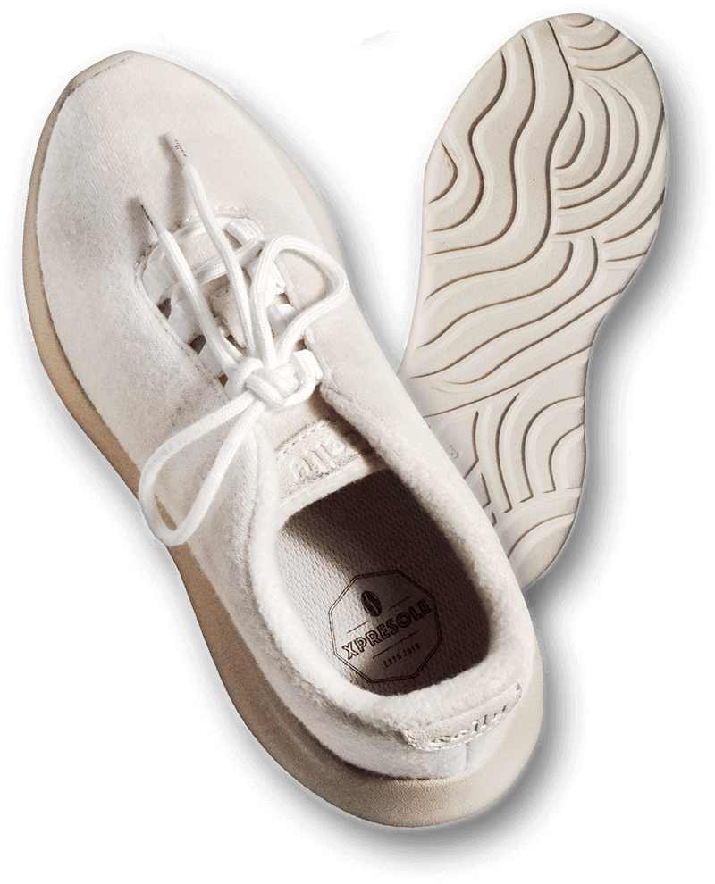

羊毛富含角蛋白，角蛋白會使細菌無法移動藉此抑制細菌滋生。
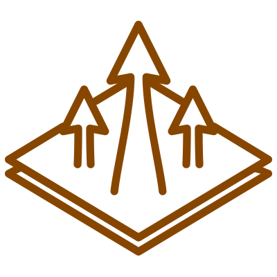
有天然的吸濕與透氣性，能快速將皮膚表面的水氣排到空氣中，維持身體的乾爽舒適。
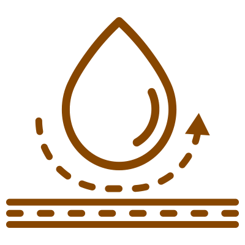
羊毛纖維有特殊蠟質，不易吸水，非常快乾，加上良好的排濕性，所以流汗後吹風，不會有化纖的冰涼感。
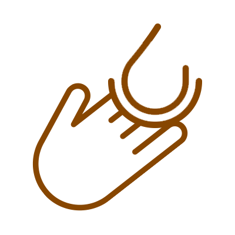
羊毛纖維非常纖細，因此膚觸柔軟，有一種高級奢侈的細緻感。
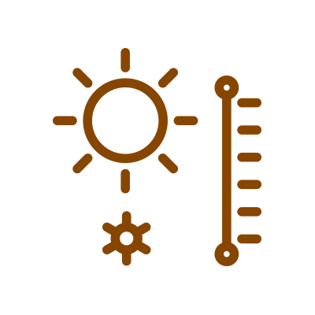
會隨著體溫變化而有所反應的恆溫性，冬暖夏涼。
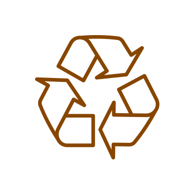
羊毛是天然可再生資源，當羊毛被丟棄後，可在土壤中自然分解，並將營養緩慢釋放回土壤。
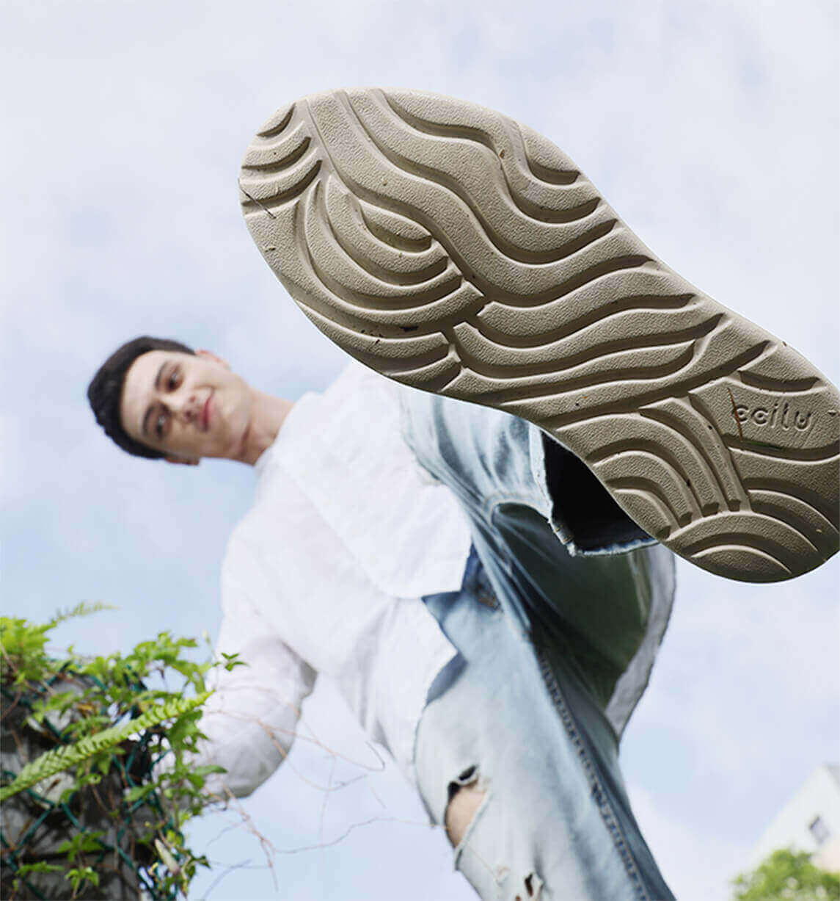
Feature
大底環保咖啡渣材質
鞋底：加厚咖啡舒適大底。永續環保概念，減少石化材料使用。河流意象設計，深溝增加排水性，下雨天不怕滑倒。
Feature
彈性緩衝結構 鞋底柔軟像會呼吸
咖啡大底獨特的XpreSole®彈性分子氣泡結構，讓大底擁有更好的柔軟性和緩衝性，行走間更能動態調整，安穩包裹雙足並且符合人體工學。
Feature
獨特分子強化支撐性 耐用不易脆化分解
利用咖啡渣多孔填充特性，除了咖啡渣本有的特性再加上CCILUCELL®獨特分子，增強支撐性並保有高度彈性。
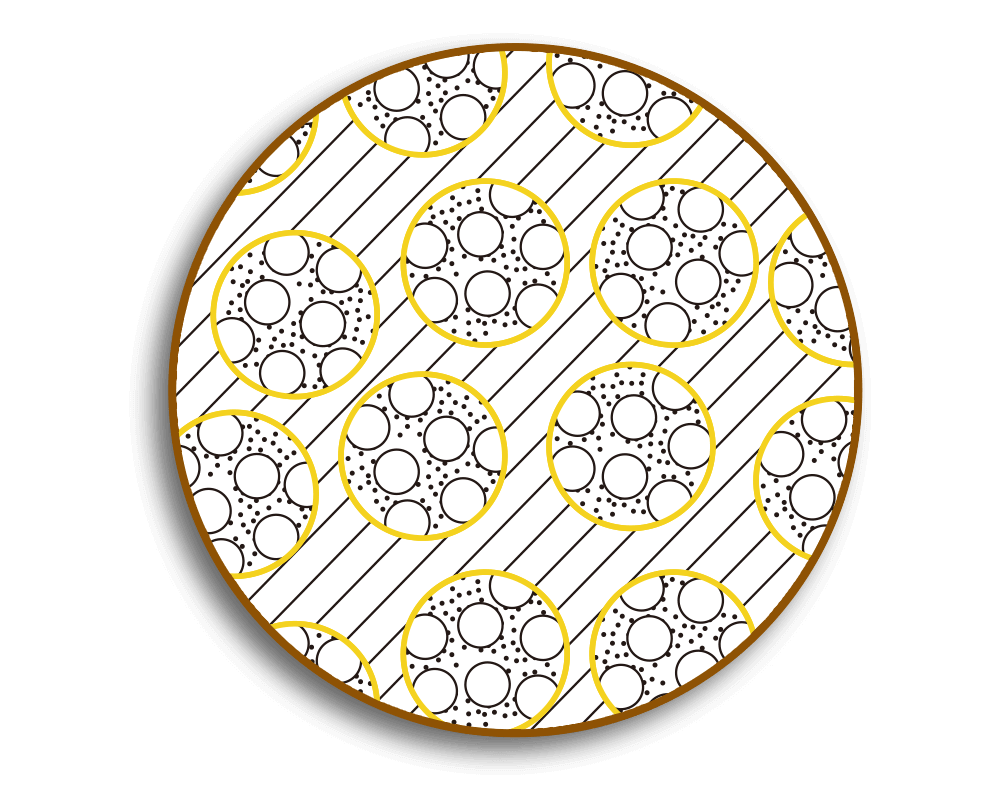國際級獨家技術，環保再製讓好渣變好咖
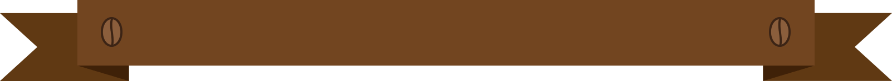
全世界每年要喝掉8500億杯咖啡，
產生約250億公斤的廢棄咖啡渣。
馳綠22製夢所研發獨家技術，
五杯咖啡可製造一雙環保咖啡鞋，
用咖啡渣代替化學材料，
減少廢棄咖啡渣以及傳統石化鞋材。
連續兩年獲紅點設計獎，環保創新世界肯定
大部分市場上的鞋子是由石油和其他化合物製成，既不環保也對地球造成傷害，馳綠22製夢所花了三年的時間研究開發，將廢棄咖啡渣改質成高科技的材料。
取代傳統石化鞋材，從產品原料開始改變，減少製鞋產業的環境汙染和資源消耗。馳綠22製夢所不只連續兩年獲得德國紅點設計大獎，更獲得許多其他國際獎項肯定。
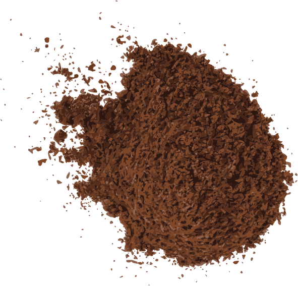
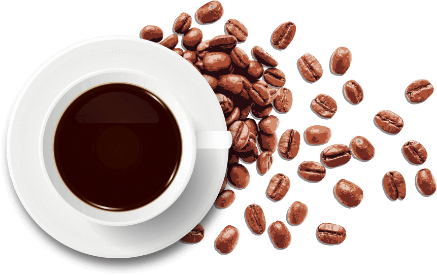

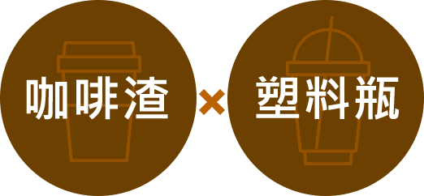
混合紗線打造最舒適的環保鞋墊
鞋墊內襯為咖啡紗線和RPET紗線(來自回收寶特瓶)混合而成。其中包含咖啡成分，分子孔洞有效吸收異味。
杯狀後跟能符合腳型，提供完善足弓支撐，走久不累。咖啡渣材質，維持鞋子清香舒適。
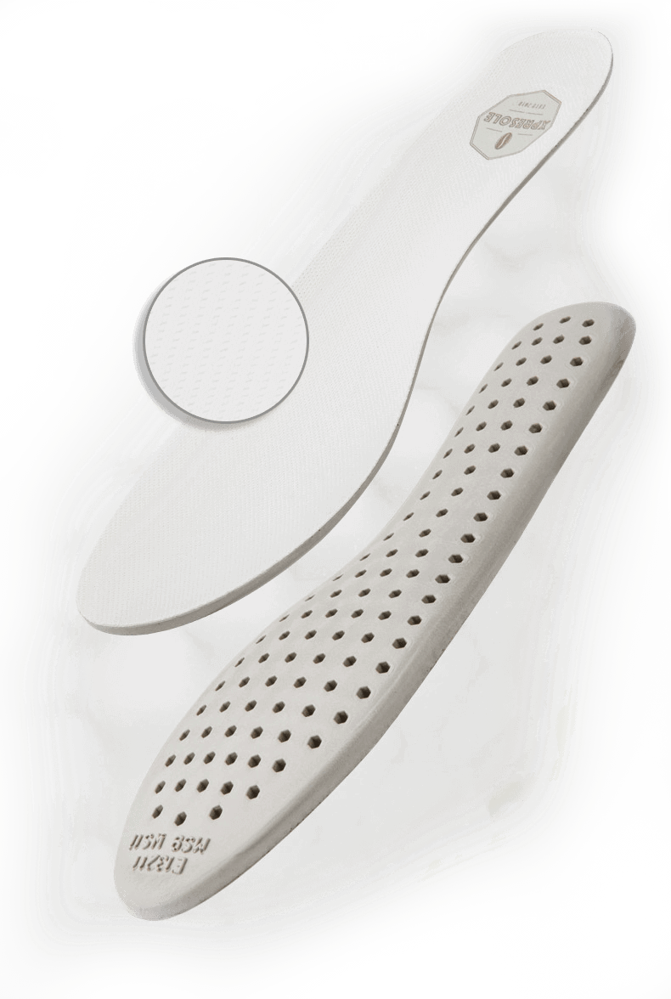
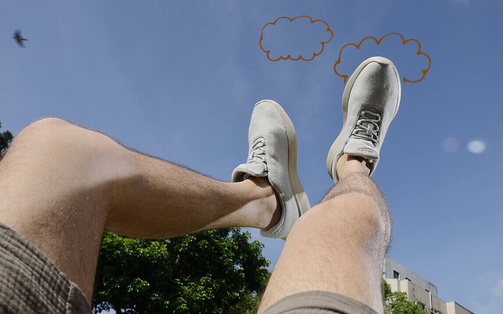

每一步都輕盈
全鞋皆採環保材質打造，單隻重量僅145g，與一般休閒鞋款相比，重量減輕50%。天然纖維美麗諾羊毛，結構細緻輕薄，兼具高親膚性與高透氣性，讓每一步都輕盈舒適。

每一刻都溫暖
羊毛纖維具有優異溫控機能，纖維間的空氣能透過人體體溫持續加溫，形成保暖外層，相當適合冬日腳部冰冷族群。而其強大的透氣機能，亦能迅速地排除濕氣，就算是下雨淋濕也能維持溫度。
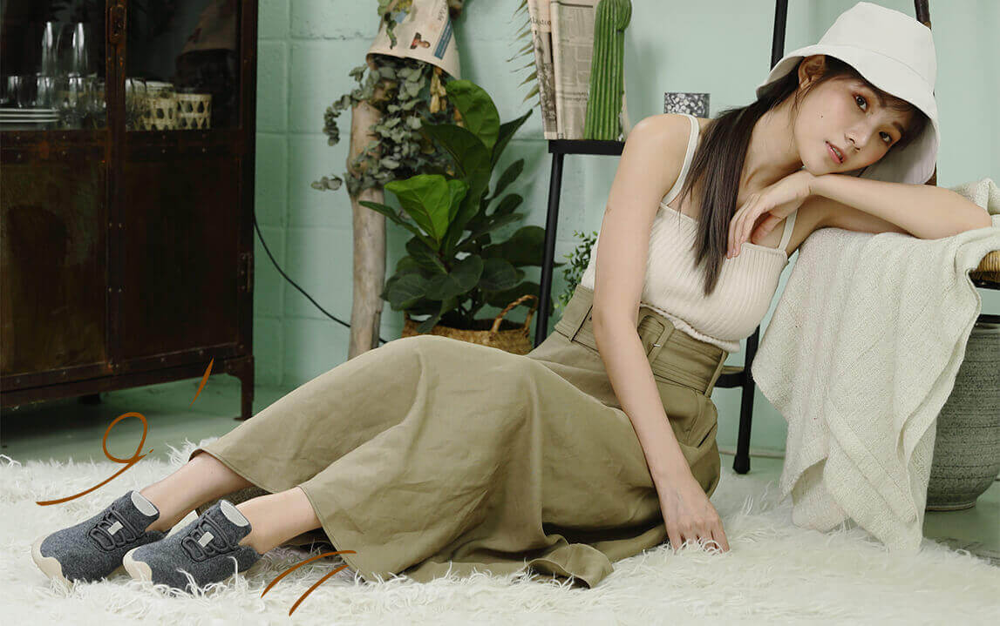
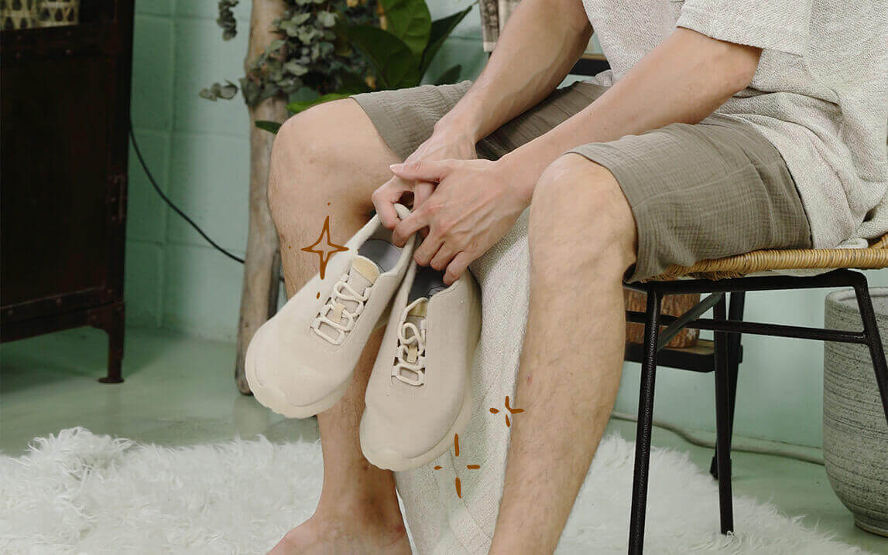

每一天都清爽
羊毛富含角蛋白，能藉此抑制細菌滋生，達到抗菌效果。天然纖維可吸收大量的水氣，有助於保持皮膚乾燥，避免汗液、細菌和異味的累積。搭配咖啡鞋墊，即使不穿襪也能維持腳步清爽無異味。
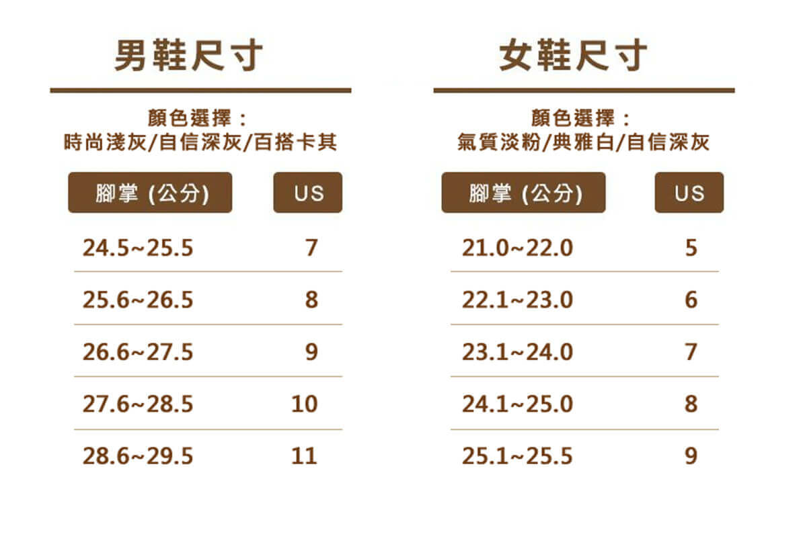
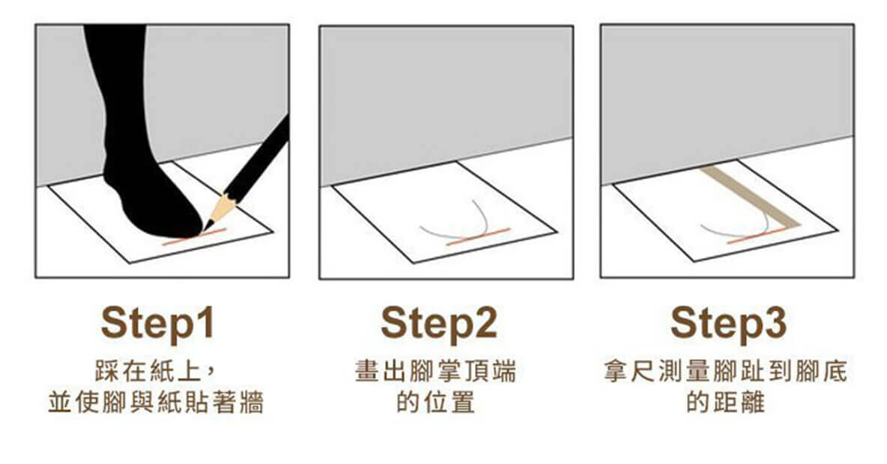
| 適用性別 | 女 | 男 |
| 款式 | Colbert哥白尼 | |
| 顏色 | 自信深灰/氣質淡粉 | 百搭雲灰/清新深綠/紳士靛藍 |
| 設計 | 台灣 | |
| 產地 | 中國 | |
| 材質 | 依吊牌標示 | |
| 尺寸 | US5~US9 | US7~US11 |
| 版型 | 正常/不穿襪略寬鬆/舒適感十足 | |
購物需知
-
限量訂購須知-
- 因網頁商品顏色視消費者的手機/電腦螢幕/平板等相關設定略有色差，請以實際到貨商品顏色為準。
- 因尺寸款式非常限量，除了瑕疵商品或寄錯貨，恕無法提供換貨服務，請在下單前確保您選購的尺寸，避免來回退貨。
- 收到商品後請於乾淨地板或於地墊上試穿尺寸大小，切勿將鞋底弄髒、毀損，將會視情況影響您退貨權益。
- 清潔方式請以溫和洗滌方式且陰乾處理，我們的材質都很快乾，唯避免使用：漂白水、柔軟精、強酸或強鹼的清潔劑和粗硬刷毛之刷具，以免傷害鞋子。
-
退貨須知-<詳情可見退/換貨政策>
- 依<消費者保護法>規定，自商品簽收日起算七天鑑賞期，欲退購者請於七日內提出，逾期恕不受理。
- 退回商品必須是全新狀態且包裝完整(含商品本體、配件、贈品、保證書、原廠包裝和廠商外箱)
- 若非正常試穿，商品已有相當程度使用痕跡，像是鞋底嚴重磨損、髒污、鞋身已楦過或長時間穿著等，導致無法進行二次銷售，可能會影響您的退貨權益。
- 免運門檻將視每次活動不同，若退貨金額未達免運門檻，將扣除該運費。
- 若收到瑕疵品或錯誤商品時，請務必拍照後來信至lab22tw@ccliu.com，將會有專人為您回覆，並處理後續客服問題。
- 貼心提醒請勿缺漏任何配件或損毀原廠外盒(包裝損毀或貼了貨運單號將酌收工本費100元)，若因此產生整新費用等必要支出，將由您負擔。